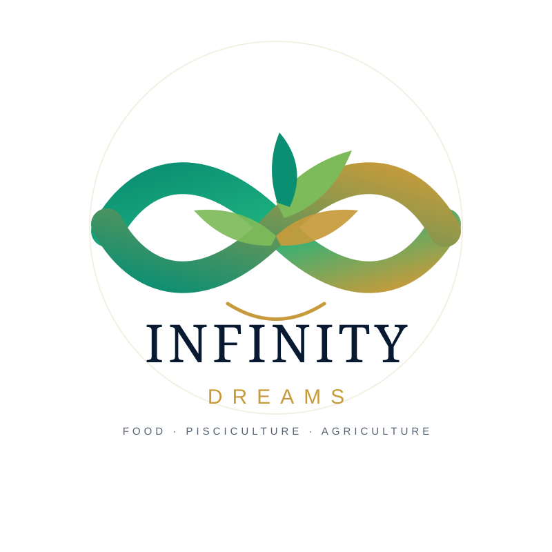

FOOD · PISCICULTURE · AGRICULTUREProduire aujourd’hui. Nourrir demain.
Infinity Dreams développe des activités productives liées à l’alimentation, à la pisciculture et à l’agriculture.
PRODUCTION DURABLE
De la terre à l’eau, créer de la valeur.
Infinity Dreams rassemble des activités productives autour de l’alimentation, de la pisciculture et de l’agriculture.
PORTFOLIO COMPANY
Des secteurs essentiels. Un potentiel durable.
Infinity Dreams s’inscrit dans la stratégie de Gabio Legacy Group autour de secteurs productifs capables de contribuer à la création de valeur sur le long terme.
L’objectif est de développer des activités structurées, productives et adaptées aux réalités du marché congolais.
SECTEURS
FoodPiscicultureAgriculture